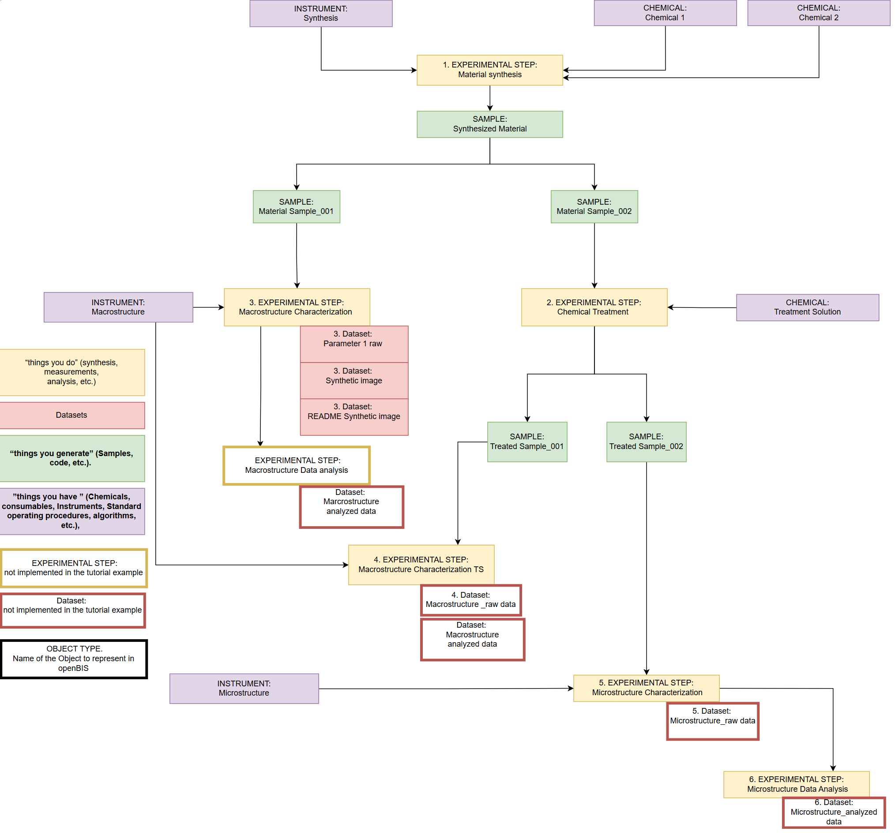
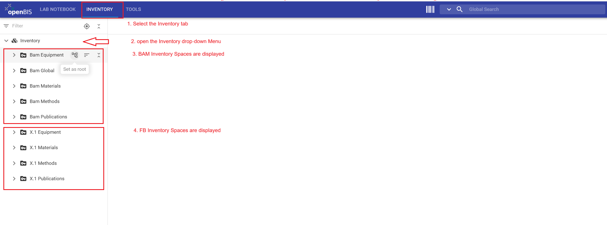
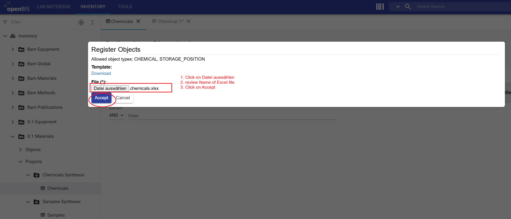

This tutorials shows division members who have been assigned the role Group Admin roles in the Data Store (Data Store Stewards (DSSts), division leads and their deputies) how to register inventory entities such as projects, collections, and objects from the "Material Synthesis" tutorial example. Registering inventory items and linking them to the experimental procedures improves the traceability, findability, reusability, and reproducibility of research data.
What you will learn
How to register inventory entities such as projects, collections, and objects in BAM and FB inventory using the graphical user interface (GUI).
How to manage access in the inventory.
Before you begin
This tutorial requires no prior experience with openBIS and is designed for openBIS version 20.10.12.
You need to have access in the openBIS instance of the BAM Data Store (access restricted to BAM employees with VPN connection).
You must be assigned a Group Admin role in Data Store. This role is assigned to Division leads, their deputies and assigned and Data Store Stewards whose names have been communicated to the Data Store team. Check your assigned role to confirm that you have sufficient rights to complete the steps in this tutorial. To do this, follow the Data Store-How to guide: How to display assigned roles in the instance
If you encounter problems, contact the Data Store team
Download Excel files
Excel files are needed to batch-register objects as described in step 3. Download the following two Excel files.
The diagram shows the research workflow used in this tutorial. Instruments and chemicals are inputs or "things you have" (purple boxes). Samples are outputs or "things you generate" (green boxes).

Figure 1: Research workflow represented for the tutorial example. In this tutorial, the "things you have" and the "things you generate" will be represented. Research workflow represented for the "Material Synthesis" tutorial example. In this tutorial, the "things you have" (purple boxes) and the "things you generate" (green boxes) will be represented.
openBIS Data Model
This tutorial uses the openBIS hierarchy: Space / Project / Collection / Object / Dataset. The hierarchy is used in BAM Inventory, FB Inventory and ELN.
In this tutorial, you will work with BAM Inventory and FB Inventory.
In this tutorial, you will work with the BAM Inventory and FB Inventory.
Important Note:
Starting with openBIS version 20.10.12, the core data model was extended to enable registration of objects at the level of space, project, whereas previously it could only be registered at the level of collection. Although this feature may provide additional flexibility and resemble the folder structures commonly used in Windows file systems, the Data Store team recommends using the core openBIS data model (Project → Collection → Object → Dataset).
This recommendation is based on the following advantages:
Registering objects in the collections provides a clear organization and better overview
Keeping the left-hand Lab Notebook menu concise and easier to navigate
Supporting standardized and scalable data organization across projects and divisions
For most research workflows, registering objects in collections and connecting related objects (for example instruments, chemicals and samples with experimental steps) using parent–child relationships provides a more robust and sustainable approach than using nested folder structures.
In this tutorial, inventory objects are organized into several collections with names Instruments, Chemicals, and Samples. These collections are placed in the corresponding projects within the FB and the BAM Inventory.
Research workflows in mapped in openBIS Data Store data structure. Inventory items used in the "Material Synthesis" tutorial example are represented as inventory objects in BAM Inventory (Instruments) and FB Inventory (Chemicals).
Inventory
The Data Store Inventory is meant to be used to organize "things you have" (purple boxes) and the "things you generate" (green boxes), tangible or non-tangible items(s. figure 1). The Inventory consist of FB Inventory and BAM Inventory compartments. Objects registered in the FB Inventory are visible only to division members, and should contain division specific inventory items. Objects registered in the BAM Inventory are visible to all Data Store members, and meant to be used for inventory items that are shared across divisions such as large devices, etc.

BAM Inventory and the FB Inventory. To display them, click on the upper INVENTORY tab and open Inventory drop-down menu in the left-hand menu.">
The Data Store Inventory has two compartments: BAM Inventory and the FB Inventory. To display them, click on the upper INVENTORY tab and open Inventory drop-down menu in the left-hand menu.
Each division (FB) has four Spaces: FB Equipment, FB Materials, FB Methods and FB Publications in the FB Inventory (s. figure 3). The BAM Inventory contains four Project: FB Equipment Open, FB Materials Open, FB Methods Open and FB Publications Open (s.figure 4).
The BAM Inventory Spaces contain four projects for each division: X.1 Equipment Open, X.1 Materials Open, X.1 Methods Open and X.1 Publications Open.
The sorting of inventory items is based on their type: equipment (measurement devices, analysis instruments, etc.), materials (chemicals, samples, specimens, etc.), and methods (repetitive procedures, standard operating procedures/SOP, etc.). In this tutorial, we will focus on registering inventory items within the BAM Inventory and the FB Inventory according to their type.
Note that use of Space Publications is optional and does not replace the purpose of the BAM database Publica to store publications.
In this tutorial, you will register instruments within the BAM Inventory, in the X.1 Equipment Open project. Chemicals will be registered within the FB inventory, in the FB Materials space and Chemicals Synthesis projects.
What should be registered?
Not every inventory items used by a division needs to be registered in the Data Store. Registration of items whose metadata is needed to understand, trace, or reproduce the research data is recommended. This includes, for example, instrument, chemicals and samples and connect them to experimental steps. These connections are established through user-defined parent-child relationships.
What metadata should be registered?
It is recommended to enter metadata which is necessary for understanding, traceability, or reproducibility of the research data. For example, the calibration date (metadata) of an instrument is important for verification of the resulting research data.
Exercises
The tutorial demonstrates a simplified workflow for the synthesis and characterization of a material before and after a non-destructive chemical treatment. The workflow has been intentionally simplified to focus on learning how to navigate the Data Store and openBIS, rather than on the scientific details. In this "Material Synthesis" tutorial example, you will learn how to register inventory items in the Data Store.. The exercises are designed for division members with Group Admin roles in the Data Store (Data Store Stewards (DSSts), division leads and their deputies).
This tutorial guides you through the following steps:
1. Register projects in FB-Inventory
2. Register collections
3. Register multiple objects via batch registration with Excel files
4. Manage access rights for collaborators
Step 1: Register projects in FB Inventory
As a Data Store Steward (DSSt), division lead, or deputy, you can create projects (Chemical Synthesis and Sample Synthesis) in the FB Inventory. Other division members do not have sufficient rights to create projects in the FB Inventory Spaces. In Step 4 of this tutorial, you will learn how to grant access to projects in the FB Inventory to support the management of inventory items.
Instructions for registering a project:
Click the INVENTORY tab in the upper navigation bar
In the left-hand menu, open the Inventory drop-down menu to select your FB Materials Space (X.1 Materials)
Click + Project to open the new project form
Enter the project information by copying and pasting Code and Description values from the table below
Review all entries and click Save
Repeat steps 1 to 5 to register projects with code CHEMICALS_SYNTHESIS and SAMPLES_SYNTHESIS (follow the table below).
Values for registering projects in FB Inventory
Space Name
Code
Description
1
*FB Materials
CHEMICALS_SYNTHESIS
Chemicals used in the "Material Synthesis" tutorial example. The records are fictional and intended solely for training and demonstration purposes.//Chemikalien aus dem Tutorial Beispiel „Material Synthesis“. Die Einträge sind fiktiv und dienen ausschließlich Schulungs- und Demonstrationszwecken.
2
*FB Materials
SAMPLES_SYNTHESIS
Samples generated in the "Material Synthesis" tutorial example. The records are fictional and intended solely for training and demonstration purposes.//Proben aus dem Tutorial Beispiel "Material Synthesis". Die Einträge sind fiktiv und dienen ausschließlich Schulungs- und Demonstrationszwecken.
*FB corresponds to your division number, for example X.1.
Click on INVENTORY tab. Select the FB Materials Space, and press on + Project to open the new project form.
Enter Code (*) (mandatory in openBIS) and Description (Mandatory for Data Store). Review the entries and Save.
General information
This section provides guidance for completing the new project form.
Code requirements
Mandatory fields in openBIS are marked with an asterisk (*)
Codes should be meaningful, in English, and between 3 and 30 characters
A code cannot be modified or reused
Description requirements
Mandatory for BAM Data Store
Should contain enough detail to be understandable to people outside the group
Should follow the format: English//German
Should contain 2 to 50 words
Warning: If the Code and Description fields are not displayed and you encounter a white page, click on the More drop-down menu and select Show Identification Info.
To display Code and Description, if hidden, click on the More drop-down menu and select Show Identification Info.The new registered projects are visible within FB Materials Space, which is displayed in the left-hand menu.
Warning: Once an project has been saved, its code cannot be modified or reused within the same instance.
To delete a project, select it in the left-hand menu, open the More drop-down menu, and select Delete. A project can only be deleted if it is empty. Therefore, all collections within this project must be deleted first before the project itself can be deleted.
CONGRATULATIONS! You have successfully created two projects within the FB Inventory.
Step 2: Register collections in BAM and FB Inventory
A project can contain multiple collections to group together inventory objects of one or different types. Collections provide a logical structure for grouping objects and facilitate navigation, data management, and data retrieval. In this tutorial example, you will create three collections and use two of them in step 3. The third collection (with name Samples) will be used by your division colleagues to register synthesized and treated samples by implementing steps from the tutorial 4-inventory-users.
Instructions for registering a collection:
In the left-hand main menu, navigate to BAM or FB Inventory spaces, and select the space (space names listed in the table below)
Select the project (project names are in the table below)
Click + Other
In the drop-down menu begin typing Collection and select it
Leave autogenerated Code(*) unchanged
Enter Name from the table below
Select Object type (value is in the table below) by beginning to type it in the Default object type drop-down menu
Select List view as the Default collection view
Review all entries and click Save
Repeat steps 1 to 9 to register a total of three collections with names Chemicals, Samples and Instruments.
General information
It is possible to register collections with or without a predefined object type. If you define an object type, as described above, the + Object Type button will appear in the collection view, allowing users to register new objects of the predefined type directly from the collection view. If you leave the default object type drop-down empty, no button with predefined object type will be available, and to register new objects, More drop-down needs to be opened and New Object needs to be selected.
Values for registering collections in BAM and FB Inventory
Space Name
Project Name
Collection Name
Default Object Type
1
*FB Materials
Chemicals Synthesis
Chemicals
Chemical
2
*FB Materials
Samples Synthesis
Samples
Sample
3
BAM Equipment
*FB Equipment Open
Instruments
Instrument
*FB corresponds to your division number, for example X.1.
After registration, the Chemicals and Samples collections will be visible in the FB Inventory. Open the FB Materials space and the Chemicals Synthesis and Samples Synthesis projects to display the corresponding collections. The registered Instruments collection will be visible in BAM-inventory within FB Equipment Open project. Note that the button with predefined object type + Instrument is visible under the collection name.
CONGRATULATIONS! You have successfully created three collections, one in BAM Inventory and two in FB Inventory.
Step 3: Register Inventory Objects via batch registration
Tangible inventory items, such as instruments and samples, and intangible items, such as standard operating procedures and software, can be represented in openBIS as objects. Objects with similar properties (metadata fields) are grouped under the same object type. For example, all instruments of the same type used for the same purpose can be grouped under the object type Instrument. In this tutorial, we will register objects of the type Chemical in the FB Inventory and Instrument in the BAM Inventory using the Excel files which can be downloaded above. Registration will be achieved through the Batch registration functionality, which allows registering multiple objects at once.
Note that registration of objects of type Sample will be demonstrated in a separate tutorial, which is designed for division members with User roles in the FB Inventory.
Instructions for registering objects via batch registration
In the left-hand menu, navigate to the Collection (collection name in the table below)
Open the More drop-down menu and select XLS Batch Register Objects
In the Register Objects window, click on Datei auswählen (choose file), select the Excel file containing the objects to register (follow table below)
Review the name displayed for the uploaded Excel file and click the Accept button
Repeat steps 1 to 4 to register objects in Chemicals and Instruments collections via batch registration (follow the table below).
Values for registering objects
Space Name
Project Name
Collection Name
Batch update file
1
*FB Materials
Chemicals Synthesis
Chemicals
Chemicals.xlsx
2
BAM Equipment
*FB Equipment Open
Instruments
Instruments.xlsx
*FB corresponds to your division number, for example X.1.
Select the Collection (Chemicals or Instruments). Open the More drop-down menu and choose XLS Batch Register Objects.

In Register Objects window, click Datei auswählen, select the corresponding Excel file, and click Accept. The registered objects of type Chemical will be displayed in FB Inventory.The registered objects of type Instrument will be displayed in BAM Inventory.
General information
In a separate tutorial, we will use the Batch update functionality to update the metadata of existing Objects. To register a single Object, click the + Chemical or + Instrument button, complete the Object form, and click Save.
CONGRATULATIONS! You have successfully batch registered objects of the types Chemical and Instrument in the FB and BAM Inventories, respectively.
In openBIS, roles and corresponding access rights are assigned at the space and project levels. For detailed information about the roles and rights defined by default, see the
Roles and Rights concept in the Data Store wiki
(accessible only within the BAM network).
Access assigned to space or projects in the FB and BAM Inventory can be revoked or modified by user with Admin role within those spaces or projects. By default, DSSts, division leads and their deputies have Group Admin roles and corresponding rights.
FB Inventory
In all FB Inventory spaces (/FB_EQUIPMENT, etc.) and their underlying content, DSSts, division leads, and their deputies have Admin roles and corresponding rights, allowing them to create projects and manage access to them. Other division members have User roles, which means they cannot create projects or manage access rights.
The FB Inventory is used to organize items belonging to a specific division. If these items need to be shared with specific collaborators, access can be granted by the division’s DSSts. This may apply, for example, when samples produced by one division are measured by collaborators from another division, or when one division generates data as a service for another. In such cases, inventory Objects can be registered in the appropriate FB Inventory space, organized within a dedicated project, and access can be managed at the project level by the division’s DSSts. Note that responsibility for maintaining the project and managing its access rights remains with the DSSts of the division.
BAM Inventory
The BAM Inventory should be used to store items whose data and metadata are intended to be visible and shared across all BAM divisions. For example, large measurement devices that are used across the institution should be registered in the BAM Inventory.
In all BAM Inventory spaces (/BAM_EQUIPMENT, etc.), division members have Observer roles.This allows division members to view the contents of the space without an ability to manipulate the data or metadata in any way. Each division has
its division-specific projects (/BAM_EQUIPMENT/FB_EQUIPMENT_OPEN, etc.), where DSSts, division lead, and their deputies have the Admin role, while division members have the User role with the corresponding rights.
DSSts can manage access in the FB Inventory spaces but not in the BAM Inventory projects. Access management in the BAM Inventory is managed by Data Store team. If an access to BAM Inventory needs to be granted or modified, contact the Data Store team.
Instructions to grant access to a project in the FB Inventory to a specific collaborator or another division:
In the left-hand main menu, select the relevant project in the FB Inventory
Click on the More drop-down menu and select Manage access
From the Role drop-down menu, select User
From the grant to drop-down menu, select Group to grant access to an entire division, or User to grant access to a specific collaborator
In the Group or User field, enter the division’s number if you selected Group, or the BAM username if you selected User
Verify the selected role and recipient, and then click Grant access
After completing this tutorial, you should be able to create inventory projects and collections, batch-register objects in the BAM and FB Inventories, explain the organizational differences between the two inventories, and can manage project-level access in the FB Inventory.